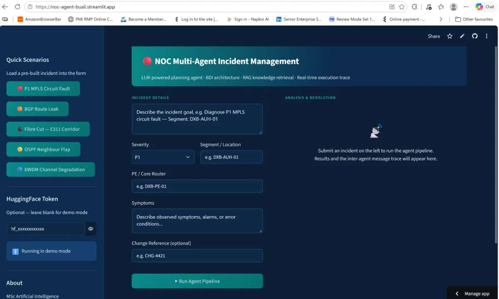

Section 05
Implemented System and Critical Evaluation (Week 11)
I built a five-agent pipeline for network operations centre (NOC) incidents. An Orchestrator routes typed AgentMessage objects through a registry. A Planner produces a BDI-framed diagnostic plan. A Retrieval agent runs FAISS search (k = 3) over 15 fault patterns, following the RAG pattern (Lewis et al., 2020). An Analyser prompts Mistral-7B-Instruct with a structured fallback, and a Reporter writes the resolution report. The app is deployed from GitHub on Streamlit Community Cloud. On 12 October 2026 I re-ran the suite and all 26 tests passed.
# agents/orchestrator.py (excerpt): every hop is traced, so the run is auditable
def _dispatch(self, target_name: str, payload: dict) -> AgentMessage:
self._msg_counter += 1
outbound = AgentMessage(sender=self.name, recipient=target_name, payload=payload)
self.message_trace.append(f"MSG #{self._msg_counter:02d} {self.name}→{target_name} "
f"| payload_keys={list(payload.keys())}")
response = self.agents[target_name].run(outbound) # registry allows mock injection in tests
...
# agents/analyser.py (excerpt): fail-safe default when the LLM is unavailable
def _fallback_result(reason: str) -> dict:
return {"root_cause": f"LLM analysis unavailable: {reason}", "confidence": 0.0,
"recommended_actions": ["Escalate to Tier-2 NOC immediately"],
"escalation_required": True, "escalation_tier": "Tier-2 NOC",
"sla_risk": "HIGH", "fallback": True, "fallback_reason": reason}

$ python -m pytest tests/test_suite.py -v # re-run 12 October 2026
collected 26 items
TestAgentMessage (3) ......... PASSED TestIntegration (5) ......... PASSED
TestPlannerAgent (4) ......... PASSED TestFunctional (3) .......... PASSED
TestAnalyserAgent (4) ........ PASSED TestEdgeCases (4) ........... PASSED
TestReporterAgent (3) ........ PASSED
============================== 26 passed in 0.17s ==============================
Remediation log (defects actually encountered)
| Defect | How found | Fix |
|---|---|---|
| Action-list regex missed multi-line output | First local pytest run | Permissive multi-line pattern |
| Pipeline tests tried to download the embedding model | Same run: all integration and functional tests failed | Mock retrieval injected via register_agent |
Notebook SyntaxError after JSON serialisation | Colab, Section 5 | Parenthesised assert messages |
HTTP 500 from undocumented st._config call | Live app crash | .streamlit/config.toml |
| Raw HTML and unreadable contrast in report | My own screenshot testing | Native Streamlit components |
| Public URL died with the Colab session | Sharing test | GitHub and Streamlit Community Cloud |
Design (week 7) versus implementation (week 11)
| Aspect | Team design | My implementation |
|---|---|---|
| Domain | Health-sciences literature screening | Telecom NOC incidents |
| Agents | Two cooperating agents | Five, with central orchestrator |
| Orchestration | LangGraph/LangChain | Custom, every message traced |
| Oversight | Human gate before storage | Advisory escalation flag only |
| Traceability | Claim → extract → identifier | Message trace; KB IDs in report |
Critical evaluation. I changed domain so that my NOC experience could supply realistic scenarios. Decomposition, typed messages and bounded failure carried over, but the design's key safeguard, the human verification gate, has no executable counterpart. Three weaknesses outweigh the green suite. The Planner matches keywords rather than planning with the LLM. The deployed app runs in demo mode, so its confidence values are templated. The functional tests check structure, not diagnostic correctness. The defects that taught me most were integration and deployment faults that no planned test anticipated.